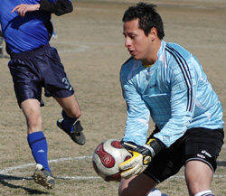
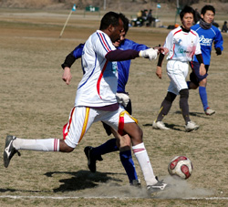
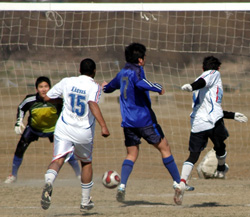

|
Misato Sunday 17th Feb,
Only those who were blessed with a match on the Misato pitch on Sunday could agree that the one true factor that could decide a game was who kept the ball on the pitch longer. Any ball above the calf that was passed, shot, trapped, flicked…(and any other move you could do with a ball) was absolutely nulled due to the wind and dirt.
However, though this match was played with 2 short handed Jetro and Lions FC teams…it was an amazing game to be a part of. The Jetro team arrived with a clear mind of vengenace from the previous loss to the Lions, and the Lions were just trying to continue carrying the 0 in the Losses column.
It appears that the secret in defeating this strong Lions team is to play them with less than 11 players on the pitch. The Jetro team came only 10 strong and with an additional injury in the second half, left with 9. This however, seems to be the achillies heal to the mighty Lions as the Jetro FC saw themselves leading 1-0 within the first 15 minutes of the game.

This dagger of a goal punctured all players and personnel of the Lions FC as it was only the 2nd goal the team has conceeded all year. Now as more Lions players arrived, the momentum of the game began to shift. The relentless and tireless legs of Ken Hersche saw two shots for goal just miss as one of them was shaved out of goal by a Jetro defender and the other by a BEAUTIFUL save from their keeper.
As the Lions began the second half trailing, their first objective was to regroup and play Lions football. It was a slow start and second gear did kick in with some position/player shifts and more inspirational running from Mr. Hersche. Twenty minutes into the second half saw a nice run from the ever dangerous youngster Ahmed Gaafar. Down the right wing, into the 18 - came a beautiful shot that went off the far post right into the path of Ken who puts the finishing touch making it 1-1. Some more excellent play from new additions Hideki and Fahaad created the pressure the Lions needed to hold the Jetro into their own half.

Though Jetro saw the second half as more of a challenge (with the wind in their face and full Lions squad), they continued their wonderful one touch passing as if all eleven were on the field. With the last minutes of the second half whinding down and the 1-1 score still being defended by the Jetro, the Tokyo Lions found themselves with their backs agains the wall. This until keeper Orlando took a hold of the ball and delivered a cross field punt over the last defender to the foot racing Zuhair who caught the ball in the 18 on the bounce and headed it parrallel to the opportunist Ken Hersche. With a beautiful display of control AND speed Ken trapped the ball on a one touch and slipped it to the left of the keeper who could do nothing but realize the game winning goal had been scored.
Although the Jetro pressed and played like men under fire…the last whistle was blown and Lions continued their winning streak. Now, truth be told, even though the win was held by the Lions, the moral victory was held by the Jetro team who not only scored a goal against the stingy Lions but held the game to a much deserving draw until the final seconds with only 9 players.
Man of the match: Ken Hersche
Report by Orlando Torres
|